A studio for
robotic making.
Delft, Netherlands.
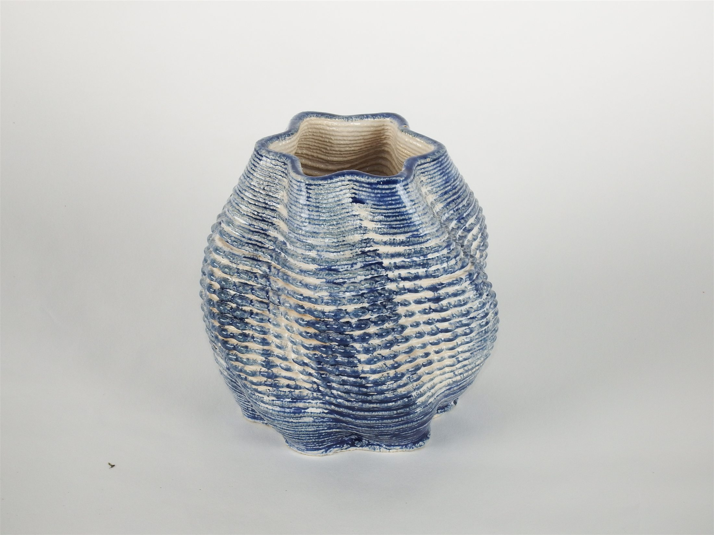
01 / STAR VASE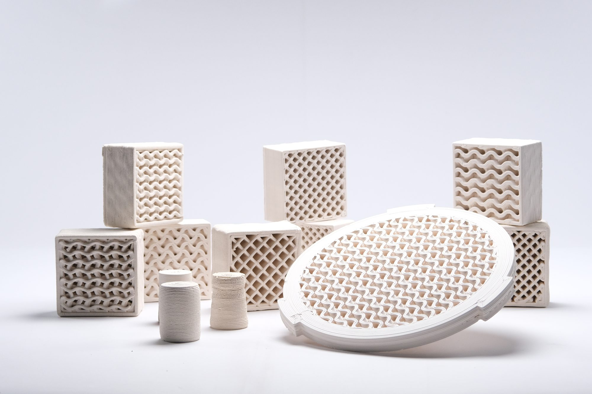
02 / TEST PIECES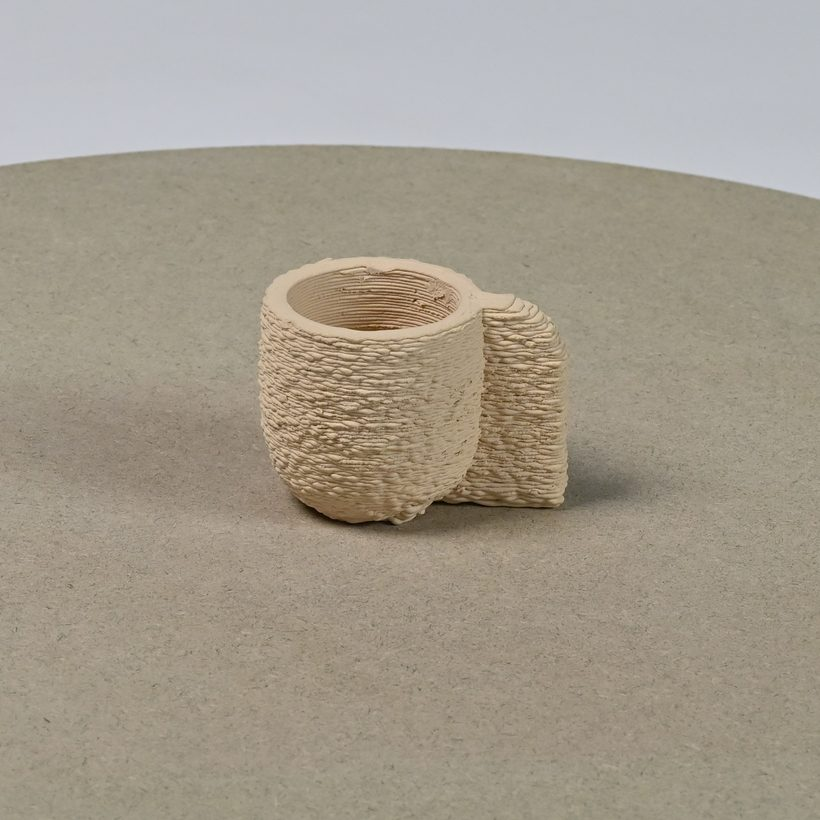
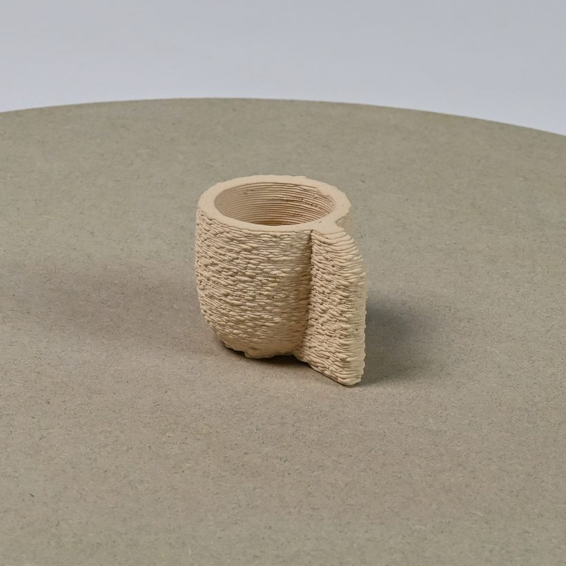
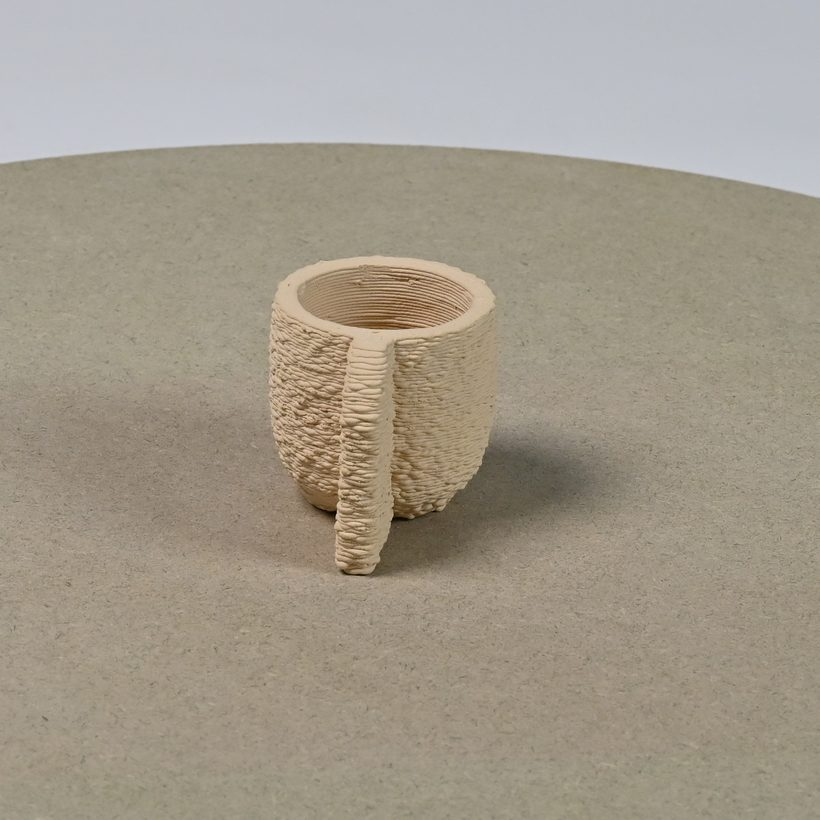
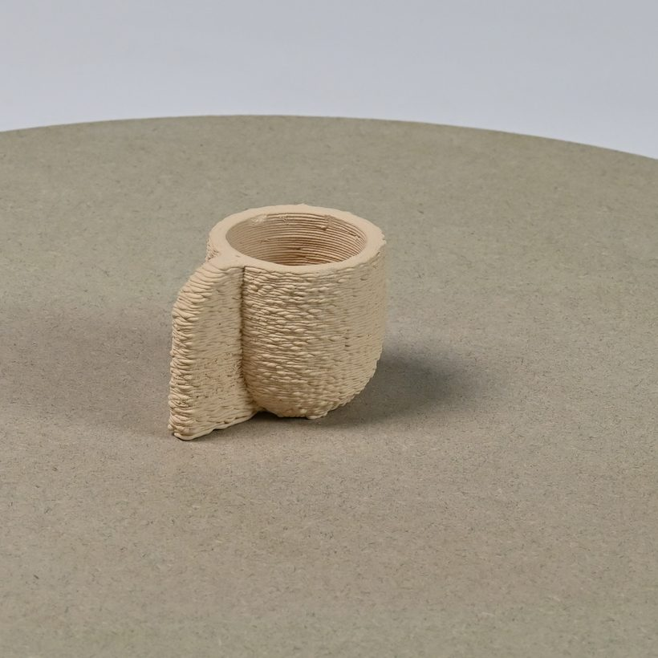
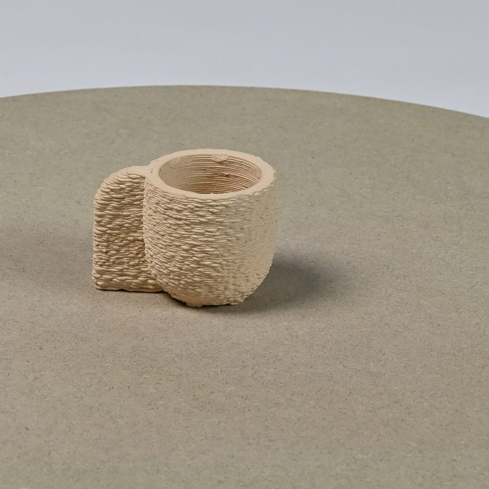
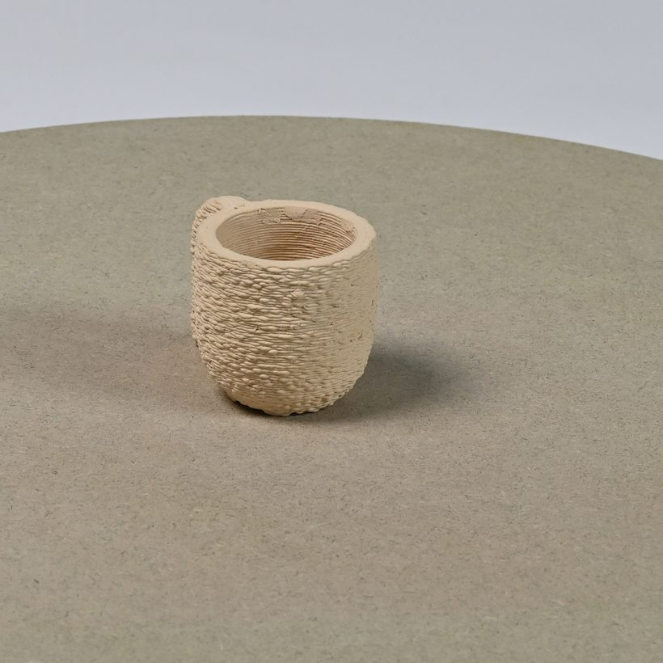
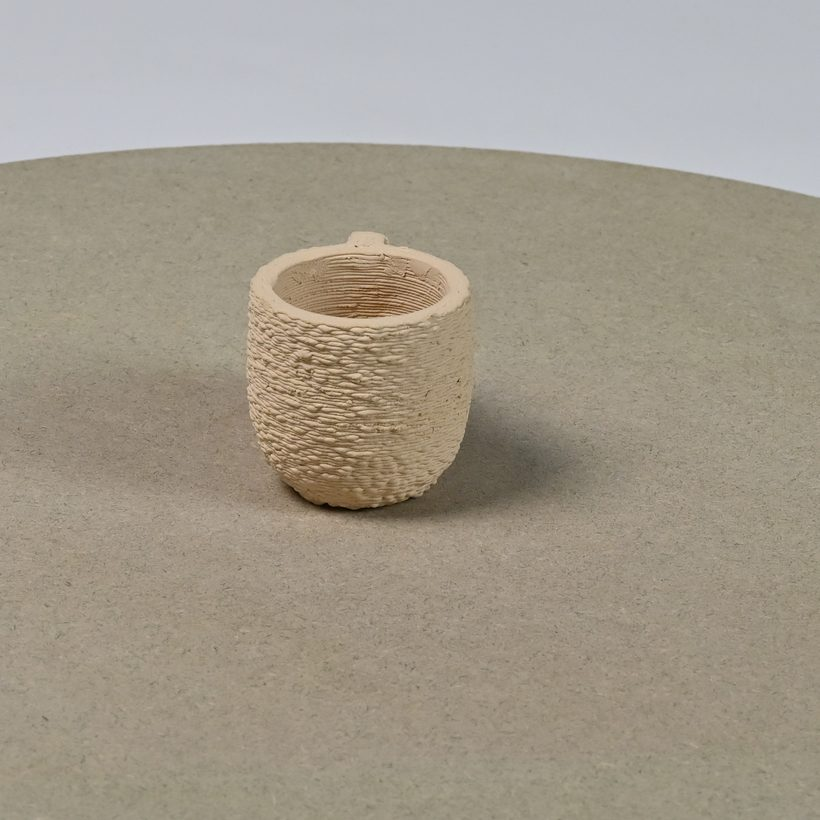
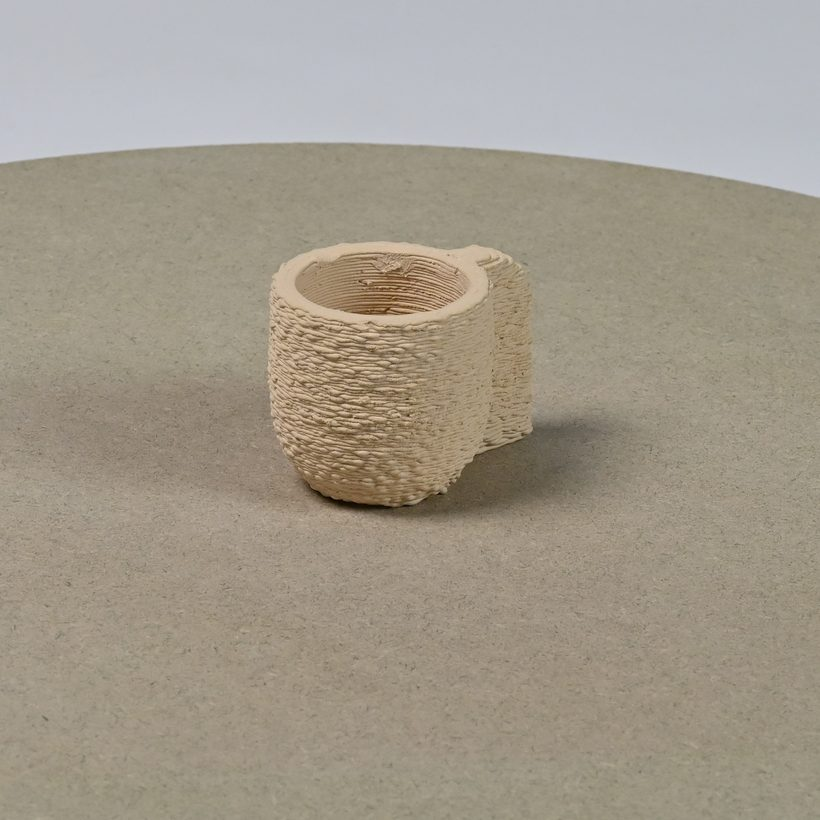
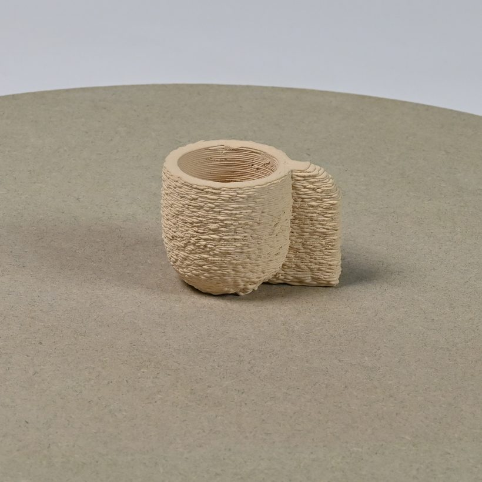
Delft, Netherlands.

01 / STAR VASE
02 / TEST PIECES








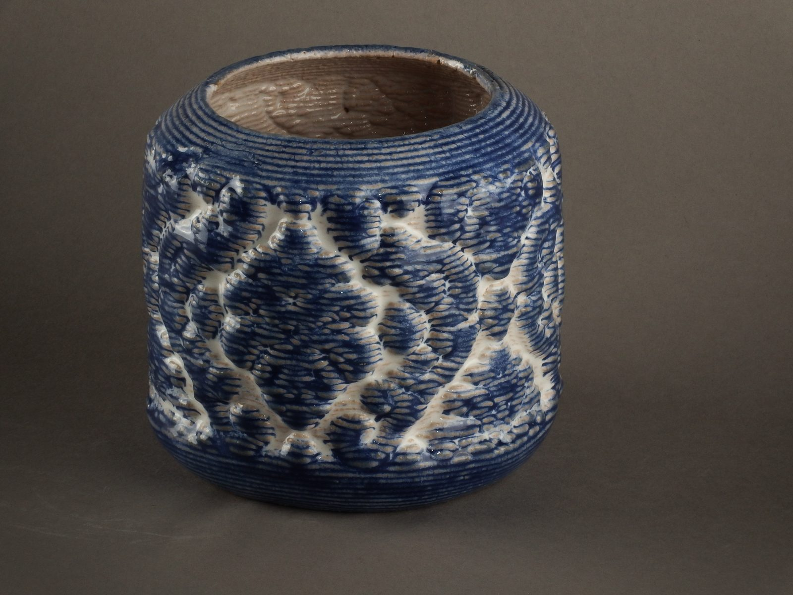
Clay then decides whether the toolpath was possible. Both answers arrive in the same object. Most of what comes off the machine is thrown away, and the pieces that survive carry the process that made them.
About the studio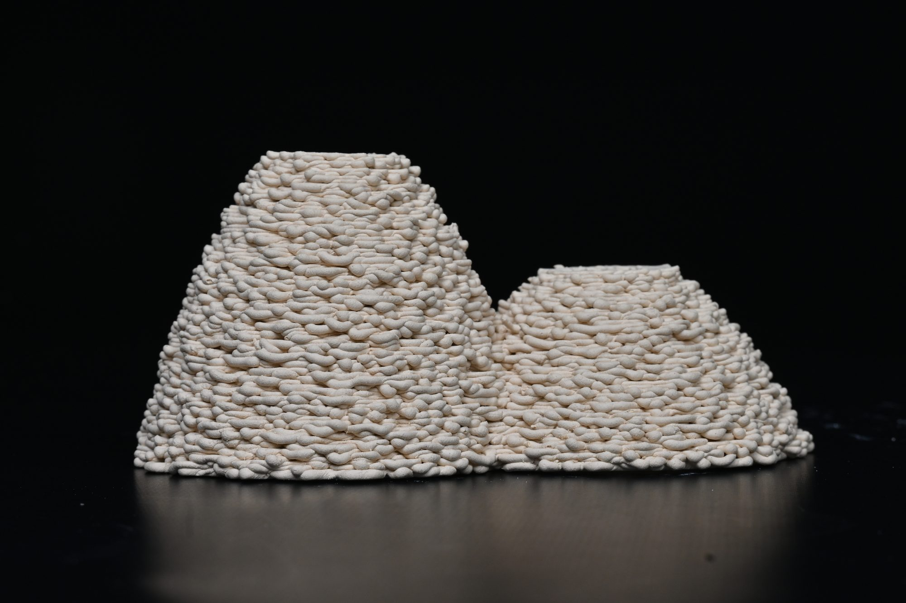
Delft, Netherlands